Materialdossier: Hochmittelalter – Könige und Kirche
Vollständiger Inhalt des Unterrichtsdossiers · Mittelalter_Hochmittelalter_Könige und Kirche.docx
Das Mittelalter: Könige und Kirche im Hochmittelalter
Die Ausgestaltung der weltlichen Macht
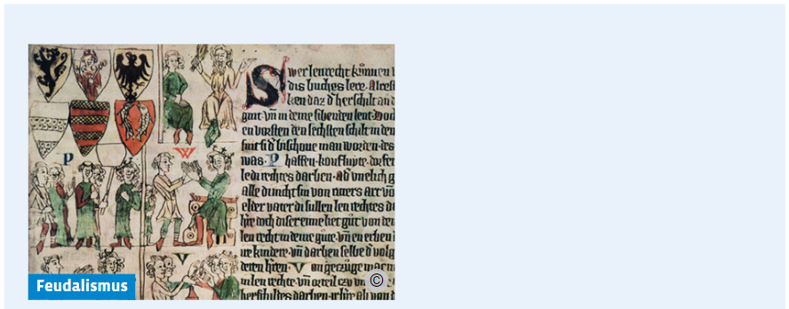
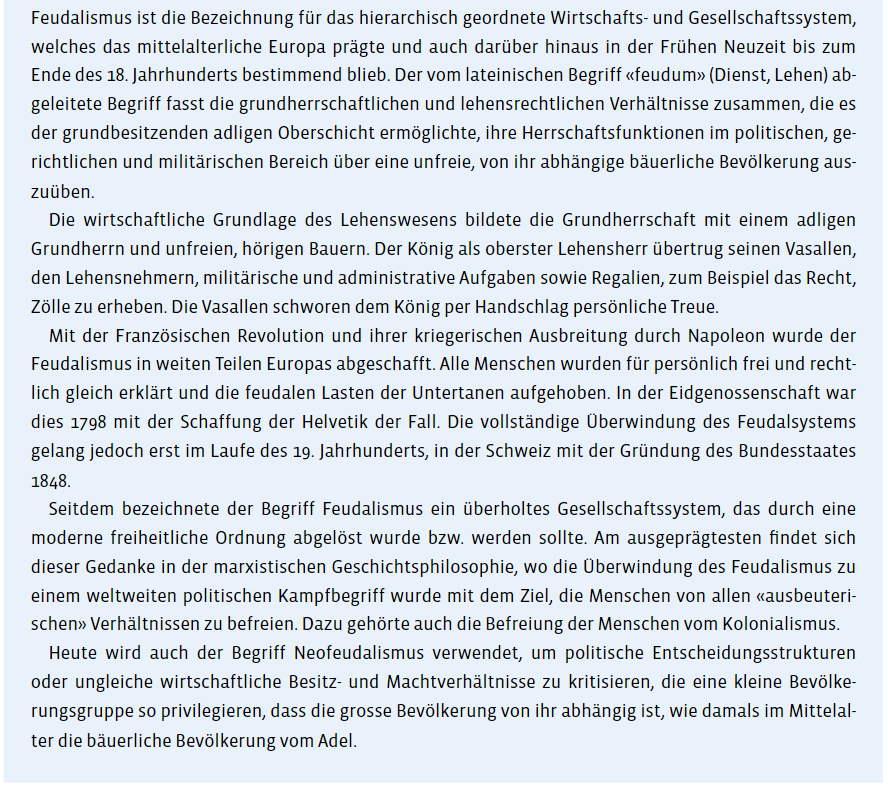
Das Lehenswesen
Die frühmittelalterlichen Könige verfügten weder über Beamte noch über ein eigenes Heer. Um ihre Macht zu sichern, waren sie daher gezwungen, durch das Reich zu reisen und sich ihrer Herrschaft zu vergewissern. So zogen sie von Königspfalz zu Königspfalz und hielten vor Ort Hoftage ab, auf denen sie sich mit den ihnen getreuen Adligen berieten und Gericht hielten. Die Könige waren auf den Konsens mit dem Adel und auf dessen Dienste angewiesen. So entwickelte sich bereits unter den fränkischen Königen das Lehenswesen, eine rechtliche, politische und soziale Ordnung zwischen König und Adel, die das ganze Hochmittelalter prägte.
Die Könige vergaben an hohe Adlige sogenannte Lehen. Meist handelte es sich dabei um eine Grundherrschaft, also um Land mit schollengebundenen Bauern, das aus den königlichen Gütern, dem Reichsgut, stammte. Aber auch königliche Ämter sowie königliche Rechte, sogenannte Regalien, zum Beispiel ein Bergwerks-, Münz- oder ein Zollrecht, wurden vom König als Lehen vergeben.
Damit belohnte der König den Adel für seine Treue, seine Unterstützung bei der Ausübung der Herrschaft und für geleistete oder noch zu leistende Kriegsdienste. Mit der Vergabe der Lehen erhielt der König zunächst ein flexibles Mittel, den Adel an sich zu binden. Diese schworen dem König Treue und verpflichteten sich zu Rat, Dienst und militärischer Unterstützung. Im Gegenzug erhielten die Lehensempfänger, die Vasallen, eine Grundherrschaft, also eine Einkommensquelle und ein Herrschaftsgebiet oder in Form der Regalien auch weitere Einkünfte sowie den militärischen Schutz des Königs, falls der Vasall angegriffen wurde.
Die direkten Lehensnehmer des Königs, meist Herzöge, Grafen oder Bischöfe, die sogenannten Kronvasallen, gaben ihrerseits einen Teil ihres Lehens an Untervasallen weiter: an Ritter oder Dienstleute, die Ministerialen. So entstand im Hochmittelalter eine abgestufte Lehensordnung, vom König über die Kronvasallen zu den Rittern, die ihrerseits den Kronvasallen Treue und Dienst schuldeten. Der König konnte diese pyramidenförmige Ordnung aber auch durchbrechen und einem Ritter direkt Land oder Rechte verleihen. Zudem vergab der König auch Rechte direkt an ganze Talschaften, so zum Beispiel an Uri, Schwyz oder im Haslital.
Ursprünglich galt für die Lehen das Heimfallprinzip, das heisst, die Lehen waren bloss ausgeliehen und fielen beim Tod des Vasallen wieder an den König zurück. Dies konnten die Könige jedoch auf Dauer nicht durchsetzen, sodass die Lehen erblich wurden und somit in der Familie des Vasallen verblieben und damit faktisch zu dessen Eigentum wurden. Hinzu kam, dass die Untervasallen im Heiligen Römischen Reich nur ihrem unmittelbaren Lehensherrn Treue schwören mussten, nicht aber dem König. Zudem musste der König die an ihn zurückgefallenen Lehen innerhalb eines Jahres wieder vergeben. Vor allem die Kronvasallen gewannen dadurch an viel Autonomie, was die Macht des Königs schmälerte. Sie wurden so mächtig, dass sie sich längst nicht immer an den Treueeid gegenüber dem König hielten.
Die Ottonen und später die Salier versuchten daher – wie zuvor schon ihre Vorgänger, die Karolinger –, ihre Herrschaft vermehrt auch auf kirchliche Würdenträger zu stützen, um die königliche Macht gegenüber den Herzogen zu stärken. Die Könige machten die Bischöfe auch deshalb zu wichtigen Vasallen, weil diese aufgrund des Zölibats, der vorgeschriebenen priesterlichen Ehelosigkeit, ihre Lehen nicht vererben konnten. Lehen, die an Bischöfe oder auch an Klöster vergeben wurden, fielen daher anders als bei den weltlichen Vasallen stets wieder an den König zurück. Dies gab dem König die Möglichkeit, das Lehen neu an einen Gefolgsmann zu vergeben, dessen Treue ihm gewiss war. Auf die Unterstützung kirchlicher Vasallen konnten sich die Könige daher meist mehr verlassen als auf die ihrer Herzöge und Grafen.
Diese von den Königen favorisierte Lehensvergabe an Geistliche garantierte ihnen jedoch nicht, dass das gesamte Reich in ihrem Sinne verwaltet wurde. Den weltlichen Kronvasallen gelang es, ihre Rechte zu bewahren; falls nötig verbündeten und erhoben sie sich gegen ihren König, um sich durchzusetzen. So blieb die Königsherrschaft ein fragiles Gebilde, das immer wieder neu mit Gewalt oder durch Kompromisse errungen werden musste. Dazu, solche politischen Lösungen zu finden, dienten die Hof- oder Reichstage, wo sich der König mit seinen Kronvasallen beriet. Denn der König konnte seine Politik meist nur dann durchsetzen, wenn auch seine Vasallen sie mittrugen.
Das Lehenswesen beruhte also auf persönlichen Beziehungen und gegenseitigen Abhängigkeiten, weshalb die mittelalterlichen Reiche auch als Personen-verbandsstaaten bezeichnet werden. Die Könige konnten ihre Macht nur im Verbund mit ihren Vasallen ausüben. Gerade deshalb war es für die Könige so wichtig, in den verschiedenen Regionen ihres Reiches persönlich präsent zu sein und von Pfalz zu Pfalz zu reisen.
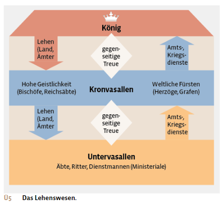
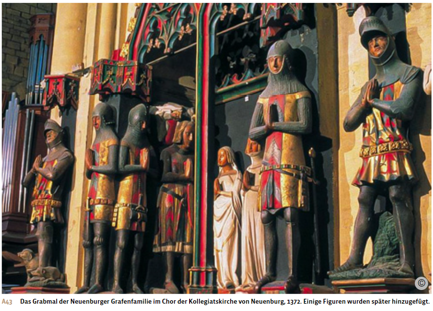
Der Adel
Der Adel bildete sich im Zusammenhang mit der Entstehung des Lehenswesens und der Grundherrschaft heraus. Die Zugehörigkeit zum Adel war in der Regel erblich, man wurde in den Adel hineingeboren. Die meisten dieser Adligen waren Nachkommen berittener Krieger und lebten zunächst noch als Führungsschicht an grösseren Höfen oder in Dörfern. Gegen Ende des Frühmittelalters begannen diese «nobiles», wie sie in den Quellen genannt werden, sich von der Dorfbevölkerung zu distanzieren: Sie errichteten frei stehende, wehrhafte Wohnhäuser aus Holz, später zunehmend aus Stein. Oft wurden diese Burgen, dem neuen Standesbewusstsein entsprechend, in erhöhter Lage gebaut, etwa auf einem Hügel oder Bergvorsprung. Auch der Name der Burg, etwa Falkenstein oder Habsburg, drückte das aufkommende Standesbewusstsein des Adels aus: Er wollte damit seine besondere adlige Kultur, in der die Jagd eine zentrale Rolle spielte, im Burgnamen sichtbar machen. Schliesslich nannten sich dann auch die adligen Besitzerfamilien selbst nach den Fantasienamen ihrer Burgen: «die Herren von Falkenstein» oder «die Herren von Habsburg». Auch auf den Friedhöfen machte der Adel seine Sonderstellung durch Abgrenzung sichtbar: Die Gräber der Adligen waren zum einen besser ausgestattet und zum anderen räumlich von denen der einfachen Bevölkerung getrennt. Ihre Gräber befanden sich an privilegierten Orten, direkt bei oder sogar in einer Kirche.
Zum Selbstverständnis des Adels gehörte es auch, sich für den Schutz der Kirche und des Christentums sowie für die Schwachen und Wehrlosen einzusetzen. So vertraten die Adligen zum Beispiel ihre hörigen Bauern vor Gericht und schützten sie militärisch vor Angriffen anderer Adliger. Gerade die Bauern hatten oft unter den Fehden des Adels zu leiden, da die Bauernhöfe, also die wirtschaftliche Basis des Adels, häufig Ziel der Angriffe waren. Die Schutzfunktion gegenüber den hörigen Bauern bezog sich jedoch vor allem auf Angriffe von aussen. Innerhalb der Grundherrschaft litten die Bauern oft unter hohen Abgaben und der Willkür ihrer adligen Grundherren.
Die adlige Unterstützung der Kirche zeigte sich oft in der Stiftung eines Klosters, das zugleich dem Seelenheil der eigenen Familie diente: So wurde im Kloster täglich für die Stifterfamilie gebetet und in der Klosterkirche wurden für sie Grabstätten errichtet. Die Habsburger Königin Elisabeth etwa stiftete zusammen mit ihren Söhnen 1309 das Kloster Königsfelden bei Windisch im heutigen Kanton Aargau zum Gedenken an ihren Gatten, König Albrecht I., der im Jahr zuvor an dieser Stelle von seinem Neffen, dem Herzog von Schwaben, ermordet worden war.
Oft konnten nur die erstgeborenen Adligen die väterlichen Güter und Lehen übernehmen. Den Nachgeborenen blieb die Möglichkeit, an Feldzügen teilzunehmen, um so ein eigenes Lehen zu erhalten oder in den Kirchendienst einzutreten, je nach Bedeutung und Ansehen einer Familie als Bischof, als Abt oder als Mönch.
Die Töchter der Adligen wurden wegen der grossen Bedeutung der Heiratspolitik für Ansehen und Macht einer Dynastie oft früh mit einem Adligen aus einer möglichst angesehenen Familie verlobt oder verheiratet: Verlobungen waren bereits ab 7 Jahren möglich, Eheschliessungen ab 12 Jahren. Adlige Ehefrauen standen unter der Vormundschaft ihres Mannes, konnten aber über ihr in die Ehe eingebrachtes Vermögen selbst verfügen. Ein Erbrecht gegenüber ihrem Ehemann hatten die Frauen jedoch nicht. Deshalb wurde oft schon vor der Heirat ein Witwengut, meist in Form einer Grundherrschaft, vereinbart, das der Frau nach dem Tod ihres Ehemannes ihren Lebensunterhalt sicherte. Vor allem im Hochadel konnten Frauen in Abwesenheit ihres Ehemannes aber auch dessen Herrschaftsrechte ausüben, zum Beispiel als Gräfin, Herzogin oder Königin. Adlige Frauen, die nicht heirateten, traten meist in ein Kloster ein und konnten dort als Priorin oder Äbtissin durchaus Führungsaufgaben übernehmen und in den Genuss klösterlicher Bildung und standesgemässer Versorgung kommen. Die Gründe für den Klostereintritt anstelle einer Heirat konnten persönlicher Natur sein. Oft wurden die Frauen aber auch von ihren Familien zum Klostereintritt gezwungen, etwa bei Ungehorsam, aus religiöser Überzeugung des Familienoberhaupts oder wenn kein Geld für eine standesgemässe Verheiratung vorhanden war.
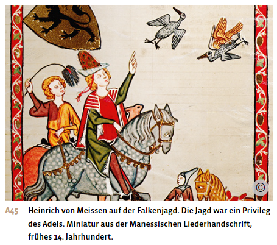
Das Rittertum
Eng verbunden mit dem Adel ist die Entstehung des Rittertums. Dieses bildete im Mittelalter eine kleine, auf den Kriegsdienst spezialisierte Bevölkerungsgruppe. Die Ritter entwickelten sich aus den frühmittelalterlichen Panzerreitern, die damals meist nicht adliger Herkunft waren. Die Ritter erhielten vom Fürsten oder König, in dessen Dienst sie standen, ein kleines Lehen, mit dessen Einkünften sie ihre Ausrüstung wie Pferd, Kettenhemd, Lanze, Schwert und Schild finanzierten. Der Ritterstand war allerdings nicht erblich. Vielmehr mussten die sich darum bewerbenden Männer von dem Adligen, in dessen Dienst sie treten wollten, zum Beispiel einem Herzog, einem Grafen oder dem König selbst, zum Ritter geschlagen werden.
Da sich diese Ritter oft rücksichtslos und undiszipliniert verhielten, untereinander Fehden führten und mitunter völlig ziellos Gewalt ausübten, entwickelten Kirche und Hochadel im 10. Jahrhundert einen umfassenden Verhaltenskodex, dem ein Ritter idealerweise nachleben sollte: Ein Ritter hatte tugendhaft, tapfer, ehrenhaft, grosszügig, galant, gottesfürchtig und höflich zu sein. Die Ritter wurden dazu angehalten, diesen Idealen zu folgen, indem sie Wehrlose, Frauen und die Kirche schützten und sich auch im Kampf auf Leben und Tod ehrenhaft verhielten, also keine Gräueltaten verübten.
Der ritterliche Verhaltenskodex basierte auf den Idealen des Adels. So wurde es bald auch für Adlige wichtig, sich in den Ritterstand erheben zu lassen, obwohl sich ihre Lebensumstände meist deutlich von denen eines einfachen Ritters unterschieden. Gleichzeitig gelang es Rittern durch diese Vermischung von Rittertum und Adel häufig, in den niederen Adel aufsteigen.
Nicht Ritter zu sein, galt bald auch im Hochadel als Makel, sodass für den erstgeborenen Sohn eines Grafen oder Herzogs, der später die väterliche Herrschaft übernehmen oder gar König werden wollte, die Erhebung in den Ritterstand zwingend war.
Um sich die dafür notwendigen ritterlichen Fähigkeiten und Ideale anzueignen, etablierte sich eine langjährige Ausbildung: Für die jungen Adligen begann diese Ritterausbildung ab dem siebten Lebensjahr zunächst als Page auf der Burg eines befreundeten Ritters, wo sie Lesen und höfische Umgangsformen lernten und sich im Reiten, Jagen, Kämpfen und dem Umgang mit Waffen übten. Ab dem 14. Lebensjahr begleiteten sie einen Ritter bei dessen grundherrlichen Aufgaben und Feldzügen als Knappe. Wenn sich der Junge dabei als würdig erwies, wurde er schliesslich mit etwa 21 Jahren feierlich zum Ritter geschlagen. Adlige, die nicht zum Rittertum befähigt waren, wurden oftmals Kleriker: Sie nahmen gemäss ihrem Status innerhalb des Adels als Mönch, Abt oder Bischof geistliche Aufgaben wahr.
Zu einem wichtigen Bestandteil der ritterlichen Kultur wurden die damals aufkommenden Turnierveranstaltungen. Hier konnten die Ritter ihre kämpferischen Fähigkeiten unter Beweis stellen und sich mit anderen Rittern messen. Die Turniere dienten so zum einen dem Wettstreit und dem Erhalt der ritterlichen Kriegstüchtigkeit, zum anderen auch der Steigerung des ritterlichen Ansehens. Die Ritterturniere fanden zunächst in grösseren Burgen statt, später vor wachsendem Publikum vor einer Burg oder sogar in einer Stadt. Dabei wurden nicht nur Lanzen- und Schwertkämpfe abgehalten, sondern auch Minnegesänge vorgetragen. Auf Minnegesang spezialisierte Ritter trugen ihre Lieder vor, die von ihrer unerwiderten Liebe (Minne) zu einer meist höhergestellten adligen Dame handelten.
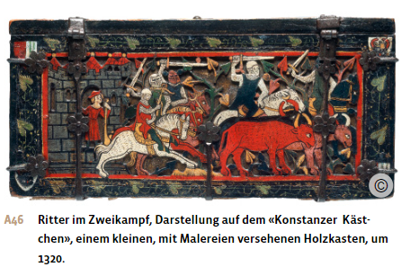
Die Ständelehre
Um das Jahr 1000 entwickelten Geistliche die Ständelehre, ein Gedankengebäude, das die sich bereits im Frühmittelalter abzeichnende Gliederung der Gesellschaft theologisch-rechtlich begründete und rechtfertigte. Gemäss dieser Lehre hat Gott die Menschen in drei Stände eingeteilt und ihnen jeweils unterschiedliche Aufgaben zugewiesen: Der erste Stand, der Klerus, die Geistlichkeit, musste für das Seelenheil der Menschen beten. Der zweite Stand, der Adel, hatte die Aufgabe, die beiden anderen Stände zu beschützen. Der dritte Stand, die Bauern, musste mit seiner Arbeit den Klerus und den Adel ernähren, damit diese ihre Aufgaben erfüllen konnten. Diesem Bauernstand gehörte mit rund 95 Prozent die überwältigende Mehrheit der damaligen Bevölkerung an.
Damit stützte die Kirche die weltliche Macht nicht mehr bloss, indem sie die königliche Herrschaft für rechtens erklärte, sondern sie deklarierte die gesellschaftliche Ordnung insgesamt als gottgegeben. Diese vermeintlich «göttliche» Ordnung entsprach aber schon damals nur zum Teil den tatsächlichen gesellschaftlichen Verhältnissen. Mit dem Wiederaufkommen von Städten ab dem 11. Jahrhundert und der damit verbundenen Ausbreitung von Handwerk und Handel begann sich der Bauernstand in seinen wirtschaftlichen Tätigkeiten stark zu differenzieren: Nicht alle Angehörigen des Bauernstandes waren noch in der Landwirtschaft tätig. Zum anderen entschied die jeweilige Standeszugehörigkeit immer weniger über den tatsächlichen wirtschaftlichen und gesellschaftlichen Status einer Person: Ein städtischer Kaufmann, der dem Dritten Stand angehörte, konnte deutlich wohlhabender und gesellschaftlich angesehener und einflussreicher sein als mancher Adliger.
Dennoch setzte die Ständeordnung mächtige soziale Normen, die über viele Jahrhunderte unverändert blieben und die Privilegien von Klerus und Adel gegenüber der Unfreiheit der Bauern als gottgewollt rechtfertigten. Wer es wagte, diese soziale und rechtliche Ungleichheit infrage zu stellen, wurde nicht selten der Gotteslästerung bezichtigt.
Auch das Strafrecht orientierte sich an der Standeszugehörigkeit einer Person: Wenn etwa ein Adliger einen Mord beging, wurde er ungleich milder bestraft als ein mordender Bauer, der dafür in der Regel die Todesstrafe erhielt. Daneben gab es auch alltägliche rechtliche Unterscheidungen in Form von Kleiderordnungen, die den Menschen je nach Stand eine mehr oder weniger luxuriöse Kleidung erlaubten oder dem Dritten Stand das Tragen bestimmter Waffen wie etwa Schwertern untersagten.
Der Adel genoss hingegen das Recht auf uneingeschränkten Waffenbesitz und die Jagd. Hinzu kamen wirtschaftliche Privilegien wie die Steuerfreiheit. Der Klerus verfügte ebenfalls über Steuerfreiheit sowie Immunität vor weltlichen Gerichten und die Kontrolle über alle geistlichen Angelegenheiten wie etwa Taufe und Seelsorge.
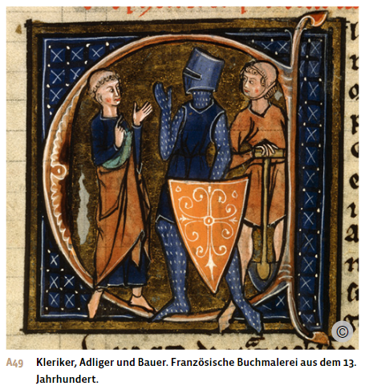
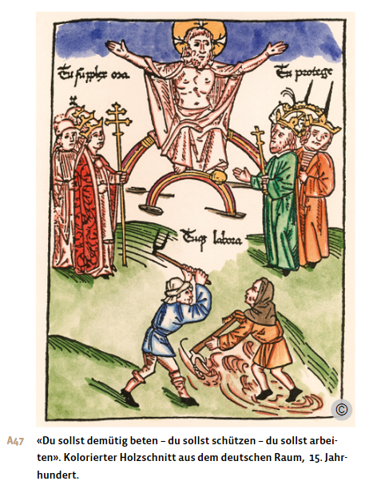
Die Angehörigen des Dritten Standes waren dagegen meist von ihrem Grundherrn abhängig. Nur gelegentlich besass der Dritte Stand ein geringes politisches Mitspracherecht in Form von Ständeversammlungen. Bei diesen Versammlungen kamen Vertreter aller drei Stände zusammen, um den König zu beraten. So gab es seit dem frühen 14. Jahrhundert die französische Ständeversammlung. Sie wurde meist einberufen, wenn der König eine Steuererhöhung plante. Allerdings hatten alle drei Stände die gleiche Stimmenzahl, sodass die privilegierten ersten und zweiten Stände den dritten Stand überstimmen konnten. An den Hoftagen oder Reichstagen des Heiligen Römischen Reiches hingegen nahmen keine Bauern teil. Nur die weltlichen und geistlichen Fürsten und seit dem Spätmittelalter auch Vertreter gewisser Städte wurden vom König zusammengerufen.
Kirche und christlicher Glaube
Christliche Prägung der Gesellschaft und Volksfrömmigkeit
Pfarreien und Klöster, beides zentrale Element der Gesamtinstitution der Kirche, vermittelten den Menschen seit der Spätantike eine für alle verbindliche Glaubenslehre. So gelang es ihnen, auch die weltlich orientierten Gesellschaftsgruppen, den Adel und die Bauern, durch christliche Normen und Werte massgeblich zu prägen. Der christliche Glaube durchdrang so die europäischen Gesellschaften in nahezu all ihren Facetten, was für die Epoche des Mittelalters charakteristisch ist. Dabei spielten auch die Kirchenbauten eine Rolle. Die Kirchen hoben sich durch ihre Grösse und Höhe von den bescheidenen anderen Bauten ab. Schon im Hochmittelalter gab es Kirchenfenster mit farbigen Glasscheiben, durch die das Sonnenlicht scheinen konnte. Das beeindruckte die Menschen ebenso wie die vielen Kerzen, der Weihrauch, die Gesänge und die grossen Bilder und Statuen in der Kirche.
Heiligenverehrung
Einen grossen Einfluss auf die wachsende Volksfrömmigkeit übte die Heiligenverehrung aus, die ihren Ursprung im Märtyrerkult der Spätantike hatte. Als Heilige galten in erster Linie Frauen und Männer, die damals trotz Todesdrohung am christlichen Glauben festhielten und dafür hingerichtet wurden. Später konnten auch Menschen, die besonders christlich lebten oder sich für neue Wege im gelebten Christentum einsetzten, heiliggesprochen werden, wobei in der Regel bloss der Papst die Heiligsprechung vornehmen konnte.
Zu jedem dieser Heiligen entstanden Heiligenlegenden, also reich ausgeschmückte, aber bloss bruchstückhaft tatsächlich belegte Geschichten aus dem Leben dieser Personen. Entsprechend dieser Legende schrieb die Kirche den Heiligen verschiedene Funktionen als Helferinnen und Helfer zu, sodass die Gläubigen ihre Hilfe im Gebet direkt anrufen konnten. So galt zum Beispiel die Heilige Barbara als Schutzpatronin der Bauersleute vor Gewittern oder der Heilige Florian als Schutzpatron vor Feuer.
Eine besondere Kraft wurde den Grabstätten der Heiligen zugeschrieben sowie den Aufbewahrungsorten ihrer Reliquien, der Überreste ihrer Körperteile oder Gegenständen, mit denen die verehrte Person in Berührung gekommen war. Über den Grabstätten der Heiligen wurden oft Kirchen errichtet, und ihre Reliquien wurden in Kirchen aufbewahrt und ausgestellt. Ausserdem wurden in den Kirchen Bilder ihres Martyriums in eindrucksvollen, dramatischen und oft auch blutigen Darstellungen gezeigt.
Viele dieser mit Heiligengräbern und Reliquien ausgestatteten Kirchen wurden zu Wallfahrtsorten, zu denen die Gläubigen auch weite Pilgerreisen unternahmen. Die Pilger glaubten, dass die Kraft dieser Heiligen an diesen Orten auf sie übergehe, sodass auch Wunder möglich wären, die sie zum Beispiel von gesundheitlichen Leiden heilen würden. Vor allem erhoffte man sich von Wallfahrten aber Befreiung oder Milderung von befürchteten Sündenstrafen.
Europaweit bekannte Wallfahrtsorte waren das Grab des Apostels Jakobus in Santiago de Compostela in Galizien und die Gräber von Petrus und Paulus in Rom. Der erste bedeutende Pilgerort im Raume der heutigen Schweiz entstand Ende des 4. Jahrhunderts in Acaunum, dem heutigen St. Maurice im Wallis, wo der heilige Mauritius verehrt wird. Dieser soll der legendären Thebäischen Legion angehört haben, deren christliche Soldaten um 330 den Märtyrertod erlitten, weil sie sich geweigert hatten, an Christenverfolgungen teilzunehmen. Als weiterer Märtyrer dieser Legion gelten der in Genf begrabene Victor sowie Ursus, der zusammen mit Victor zum Stadtheiligen von Solothurn erkoren wurde. Auch die Zürcher Stadtheiligen Felix und Regula sollen der Legende nach von der Thebäischen Legion desertiert, dann aber in Zürich durch den römischen Statthalter gefoltert und enthauptet worden sein. Über dem überlieferten Standort ihrer Gräber wurde im 9. Jahrhundert das Zürcher Grossmünster errichtet.
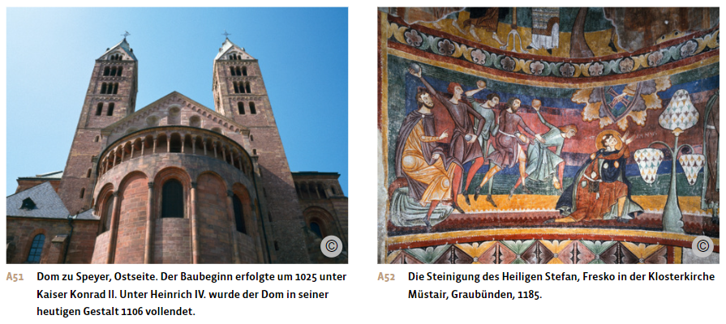
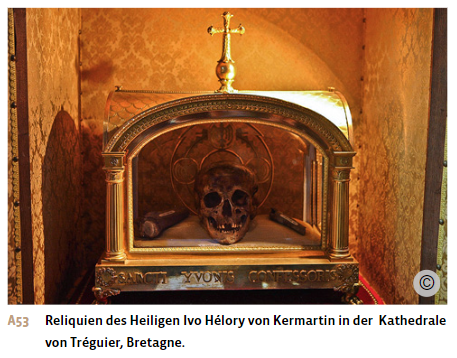
Jüngstes Gericht und Fegefeuer
Das Mittelalter war von einer starken Endzeiterwartung geprägt. Nach der Offenbarung des Johannes, der Apokalypse in der Bibel, sollte das Jüngste Gericht 6000 Jahre nach der Erschaffung der Welt stattfinden. Viele Menschen glaubten daher, das Jüngste Gericht stehe unmittelbar bevor. An diesem Ende aller Zeiten werde Christus wiederkommen, um über die Lebenden und die Toten zu richten. An diesem Jüngsten Tag würde sich zudem die Seele der Toten wieder mit dem Körper vereinen. Der Kirchenlehrer Augustinus hatte dieses Bild vom Jüngsten Gericht bereits in der Spätantike konkretisiert. Demnach kamen die Guten, die nach den Geboten der Kirche gelebt hatten, in den Himmel, also ins Paradies. Die Schlechten, die Sünder, würden dagegen in die Hölle, in die ewige Verdammnis, stürzen.
Aufgrund der Erwartung des nahen Jüngsten Gerichts war das Bedürfnis der Menschen gross, Sünden zu vermeiden oder sich diese von der Kirche vergeben zu lassen. Dies führte daher zu einem verstärkten Engagement in religiösen Praktiken wie Gebet, Busse, Wallfahrten und Almosenspende. Viele Menschen sahen auch Leiden und Katastrophen als Zeichen der bevorstehenden Apokalypse und als Prüfung ihres Glaubens, ihrer religiösen Standhaftigkeit. Immer wieder kam es zu Untergangsprophezeiungen, welche die Menschen zum Teil stark beunruhigten.
Im Laufe des Mittelalters erweiterte die Kirche die Vorstellung vom Jüngsten Gericht noch um ein individuelles Gericht, das unmittelbar nach dem Tod eines Menschen stattfand. Dieses betraf nur die Seele des Menschen, die sich zwischen dem Tod und dem Jüngsten Gericht in einer Art Wartezustand befand. Während die Seelen der Heiligen direkt in den Himmel aufstiegen und die der grossen Sünder direkt in die Hölle kamen, wurden die Seelen der meisten Menschen in das Fegefeuer, das Purgatorium, geschickt. Hier wurden die Seelen der Verstorbenen vor ihrer Aufnahme in den Himmel geläutert. Im Gegensatz zur ewigen Verdammnis in der Hölle waren die Sündenstrafen im Fegefeuer zeitlich begrenzt. Zudem konnten die Gläubigen bereits zu Lebzeiten etwas tun, um die Dauer der zu erwartenden Qualen zu verkürzen oder sich sogar ganz davon zu befreien: etwa durch Gebete, die Anrufung von Heiligen oder durch «gute Werke» wie Spenden an Klöster und Kirchen oder Almosen für Arme. Schliesslich konnten auch Angehörige für bereits verstorbene Familienmitglieder Linderung der Qualen erwirken, indem sie für sie beteten, «gute Werke» für sie verrichteten oder Messen für sie lesen liessen. So entstand aus der Vorstellung des Fegefeuers auch eine Verbindung zwischen den Lebenden und den Toten. Denn man glaubte, den Seelen der Toten vom Diesseits aus helfen zu können.
Diese Vorstellung vom Fegefeuer förderte nicht bloss die Frömmigkeit, sondern spendete den Menschen auch Trost und Hoffnung. Denn obwohl der Tod allgegenwärtig war und danach Höllenqualen drohten, gab es auch die Aussicht auf Erlösung und das Paradies – trotz begangener Sünden.
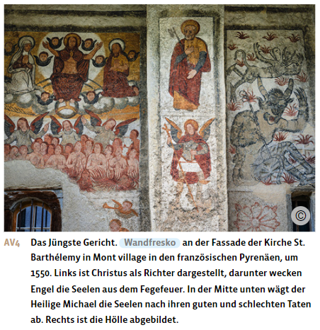
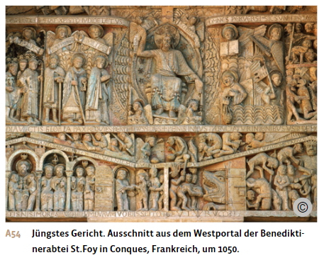
Aus: Notz, Thomas; Frey, Walter (Hg.): Geschichte fürs Gymnasium. Steinzeit bis 1450. Bern 2024, S. 277-286.